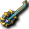

一般｜異常狀態防禦｜99魔王區獎勵道具
名稱為橘色的是可以附魔的物品。另外，未鑑定名稱是該道具在未鑑定狀態下的名稱。
提供情報或編輯請求，請到情報提供公佈欄、編輯公佈欄。
一般
| 名稱 | 價格 | 限制 | 職業 | Wei | 取得方式 |
 修練用吉他 修練用吉他 | 1,000 | Lv0 | 戰修盜騎阿聖魔預吟 | 3 | |
加工、裝飾之前的原始狀態吉他
| 名稱 | 價格 | 限制 | 職業 | Wei | 取得方式 |
| 貝斯吉他 | 26,700 | Lv1 | 戰修盜騎阿聖魔預吟 | 4 | 斯歐米：鐵匠、魯克西翁：鐵匠、萊貝雅：鐵匠、 諾肯、雷德 諾肯、雷德 |
| 能力 | 攻8～15 |
| 名稱 | 價格 | 限制 | 職業 | Wei | 取得方式 |
 曼陀林 曼陀林 | 26,700 | Lv1 | 戰修盜騎阿聖魔預吟 | 4 | 斯歐米：鐵匠、萊貝雅：鐵匠、波恩 |
| 能力 | 攻8～15 |
| 名稱 | 價格 | 限制 | 職業 | Wei | 取得方式 |
| 砍刀 | 26,700 | Lv1 | 戰修盜騎阿聖魔預吟 | 4 | 諾肯雷德 |
| 能力 | 攻8～15 |
| 名稱 | 價格 | 限制 | 職業 | Wei | 取得方式 |
| 魯特琴 | 225,000 | Lv20 | 戰修盜騎阿聖魔預吟 | 5 | 卡雷瓦拉：鐵匠、 [絨毛鼠]、迪格巴吉 [絨毛鼠]、迪格巴吉 |
| 能力 | 攻22～34、DAM+5、STR+2 |
| 名稱 | 價格 | 限制 | 職業 | Wei | 取得方式 |
| 阿爾曼魯特琴 | 225,000 | Lv20 | 戰修盜騎阿聖魔預吟 | 5 |  彩券、［絨毛鼠］ 彩券、［絨毛鼠］ |
| 能力 | 攻22～34、DAM+5、STR+2 |
| 名稱 | 價格 | 限制 | 職業 | Wei | 取得方式 |
| 帕邦魯特琴 | 225,000 | Lv20 | 戰修盜騎阿聖魔預吟 | 5 |  [惡夜摩斯]、波恩:斯歐米森林5 [惡夜摩斯]、波恩:斯歐米森林5 |
| 能力 | 攻22～34、DAM+5、STR+2 |
| 名稱 | 價格 | 限制 | 職業 | Wei | 取得方式 |
 桑丘吉他 桑丘吉他 | 10 | Lv21 | 戰修盜騎阿聖魔預吟 | 10 |  吉他手之猴 吉他手之猴 |
| 能力 | 攻12～13 |
| 名稱 | 價格 | 限制 | 職業 | Wei | 取得方式 |
| 遺忘的砍刀 | 180,700 | Lv31,FLv11 | 戰修盜騎阿聖魔預吟 | 4 | 貪婪、媽媽梅馬德 |
| 能力 | 攻13～14、INT+1、WIS+2、MP+40、SP+60 |
| 備註 | 死亡時消失 |
| 名稱 | 價格 | 限制 | 職業 | Wei | 取得方式 |
 肯比歐斯吉他(舊) 肯比歐斯吉他(舊) | 890,000 | Lv31,FLv21 | 戰修盜騎阿聖魔預吟 | 7 | Q:肯比歐斯討伐 |
| 能力 | 攻20～70+隨機(BaseDAM+13～15、WIS+4～6、HP+46～60、MP+52～69) |
| 備註 | 肯比歐斯區域獎勵品 |
| 名稱 | 價格 | 限制 | 職業 | Wei | 取得方式 |
| 民謠吉他 | 840,000 | Lv50 | 戰修盜騎阿聖魔預吟 | 6 | 彩券、盧亞斯森林6 |
攻27～57、DAM+10、STR+5
吟遊詩人的樂器之一，吉他
| 名稱 | 價格 | 限制 | 職業 | Wei | 取得方式 |
| 古典吉他 | 840,000 | Lv50 | 戰修盜騎阿聖魔預吟 | 6 | 彩券、盧亞斯森林6 |
攻27～57、DAM+10、STR+5
吟遊詩人的樂器之一，吉他
| 名稱 | 價格 | 限制 | 職業 | Wei | 取得方式 |
| 滑音吉他 | 840,000 | Lv50 | 戰修盜騎阿聖魔預吟 | 6 | 彩券、 斯皮羅 斯皮羅 |
攻27～57、DAM+10、STR+5
吟遊詩人的樂器之一，吉他
| 名稱 | 價格 | 限制 | 職業 | Wei | 取得方式 |
| 夏威夷吉他 | 840,000 | Lv50 | 戰修盜騎阿聖魔預吟 | 6 |  ［阿納坎］、［艾米斯］(紫)、 ［阿納坎］、［艾米斯］(紫)、 ［馬凱拉］、 ［馬凱拉］、 冰霜貴族(冰之城)、九拾九之鬼、 冰霜貴族(冰之城)、九拾九之鬼、 萬聖節南瓜 萬聖節南瓜 |
攻27～57、DAM+10、STR+5
吟遊詩人的樂器之一，吉他
| 名稱 | 價格 | 限制 | 職業 | Wei | 取得方式 |
 泰特拉吉他 泰特拉吉他 | 2,000,000 | Lv71 | 戰修盜騎阿聖魔預吟 | 0 | Q:泰特拉武器 |
攻60～100
不可轉讓、不可放置地面。以古代文明失落的物質製成的樂器。可用專用捲軸附魔，但會附魔什麼效果完全未知。
| 名稱 | 價格 | 限制 | 職業 | Wei | 取得方式 |
| 肯比歐斯吉他(新) | 890,000 | Lv81,FLv21 | 戰修盜騎阿聖魔預吟 | 7 | Q:肯比歐斯討伐 |
| 能力 | 隨機(BaseDAM+13～15、WIS+5～6、HP+50～60、MP+56～69) |
| 備註 | 肯比歐斯區域獎勵品 |
| 名稱 | 價格 | 限制 | 職業 | Wei | 取得方式 |
| 靈魂吉他 | 99,000 | Lv81,FLv21 | 戰修盜騎阿聖魔預吟 | 7 | 什麼都有彩券 |
| 能力 | 攻83～127、AC+15、MC+15、DAM+10、STR+8、INT+6、WIS+6、SP-50、MDAM+3 |
| 備註 | 捨棄防禦，換取如鬼人般攻擊力的受詛咒吉他。 |
| 名稱 | 價格 | 限制 | 職業 | Wei | 取得方式 |
| 海波尼亞吉他 | 150,000 | Lv91,FLv31 | 戰修盜騎阿聖魔預吟 | 7 | 冰霜貴族(MC1)、加爾普 |
| 能力 | 攻47～75、DAM+10、STR+5 |
| 名稱 | 價格 | 限制 | 職業 | Wei | 取得方式 |
| 洛文烏德琴 | 150,000 | Lv91,FLv31 | 戰修盜騎阿聖魔預吟 | 7 | 冰霜貴族(MC1)、加爾普 |
| 能力 | 攻47～75、HP+100、SP+100 |
| 名稱 | 價格 | 限制 | 職業 | Wei | 取得方式 |
| 瓦爾吉他 | 160,000 | Lv95,FLv35 | 戰修盜騎阿聖魔預吟 | 8 | 冰霜貴族(MC1)、加爾普 |
| 能力 | 攻58～97、DAM+10、STR+7 |
| 名稱 | 價格 | 限制 | 職業 | Wei | 取得方式 |
| 西亞夫尼烏德琴 | 160,000 | Lv95,FLv35 | 戰修盜騎阿聖魔預吟 | 8 | 冰霜貴族(MC1)、加爾普、 波特(異次元)、 波特(異次元)、 [長老迪斯] [長老迪斯] |
| 能力 | 攻58～97、HP+150、SP+150 |
| 名稱 | 價格 | 限制 | 職業 | Wei | 取得方式 |
| 極限吉他 | 2,000,000 | Lv98,FLv50 | 戰修盜騎阿聖魔預吟 | 14 | Q:極限武器 |
攻110～180、STR+5
據說只有克服無數困難的真正勇者才能取得的傳說吉他。但是以目前的狀態無法充分發揮其力量。
| 名稱 | 價格 | 限制 | 職業 | Wei | 取得方式 |
| 極限吉他 | 2,000,000 | Lv98,FLv50 | 戰修盜騎阿聖魔預吟 | 14 | Q:極限武器 |
攻110～180、DAM+10、STR+5、HP+400、MP+100、SP+100
不可轉讓、不可放置地面、1個月後消失、僅可用閃耀捲軸附魔。據說只有克服無數困難的真正勇者才能取得的傳說吉他。擁有驚人的能力。
異常狀態防禦
| 名稱 | 價格 | 限制 | 職業 | Wei | 取得方式 |
 閃耀琴弦未鑑定名稱：樂器 閃耀琴弦未鑑定名稱：樂器 | 10,000 | Lv81,FLv21 | 戰修盜騎阿聖魔預吟 | 15 | [格蘭德拜斯］格蘭德拜斯 |
| 能力 | 攻25～46、INT+3、WIS+3、MP+70、SP+120 |
| 備註 | 混亂防禦(PCount:120) |
| 名稱 | 價格 | 限制 | 職業 | Wei | 取得方式 |
| 音速背心未鑑定名稱：樂器 | 15,000 | Lv91,FLv31 | 戰修盜騎阿聖魔預吟 | 15 | 埃尼斯特米、裝備彩券、冰霜貴族(羅西的房間) |
| 能力 | 攻36～67、INT+3、WIS+4、MP+90、SP+140 |
| 備註 | 混亂防禦(PCount:120) |
| 名稱 | 價格 | 限制 | 職業 | Wei | 取得方式 |
 迪捷雷德吉他 | 2,300,000 | Lv95,FLv35 | 戰修盜騎阿聖魔預吟 | 7 | Q:赫爾西翁製造 |
攻17～18、AAR+1、CON+1、INT+7、WIS+7、HP+50、MP+120、SP+270、持續時間增加+11%
據說是反抗神的天使們所使用的吉他。含有美麗的天使之淚。備註：混亂防禦(PCount:200)
| 名稱 | 價格 | 限制 | 職業 | Wei | 取得方式 |
| 蒂亞雷德吉他 | 2,750,000 | Lv97,FLv45 | 戰修盜騎阿聖魔預吟 | 4 | Q:赫爾西翁升級 |
攻19～20、AAR+1、CON+2、INT+7、WIS+7、HP+70、MP+130、SP+280、持續時間增加+11%
強化迪捷雷德吉他的吉他。備註：混亂防禦(PCount:200)
99魔王區獎勵道具
| 名稱 | 價格 | 限制 | 職業 | Wei | 取得方式 |
| 單吉他 | 890,000 | Lv75,FLv20 | 戰修盜騎阿聖魔預吟 | 11 | Q:99魔王區 |
| 能力 | 攻60～80、DAM+8、HIT+5、STR+4+隨機(BaseDAM+12～16、WIS+2～5、HP+40～70、MP+40～70) |
| 備註 | 99魔王區獎勵道具 |
| 名稱 | 價格 | 限制 | 職業 | Wei | 取得方式 |
| 雙吉他 | 890,000 | Lv78,FLv25 | 戰修盜騎阿聖魔預吟 | 11 | Q:99魔王區 |
| 能力 | 攻65～90、DAM+10、HIT+5、STR+5+隨機(BaseDAM+12～16、WIS+2～5、HP+40～70、MP+40～70) |
| 備註 | 99魔王區獎勵道具 |
| 名稱 | 價格 | 限制 | 職業 | Wei | 取得方式 |
| 三吉他 | 890,000 | Lv81,FLv30 | 戰修盜騎阿聖魔預吟 | 11 | Q:99魔王區 |
| 能力 | 攻70～100、DAM+12、HIT+5、STR+6+隨機(BaseDAM+12～16、WIS+2～5、HP+40～70、MP+40～70) |
| 備註 | 99魔王區獎勵道具 |